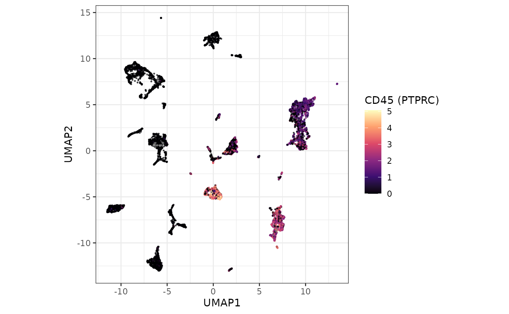

Continue in the session from Query the
atlas. obs_lung already holds the respiratory cohort:
nine Human Cell Atlas studies, with donor age and harmonised cell-type
labels.
This article asks whether those cells separate into the immune and
epithelial compartments the later models use. You download a
SingleCellExperiment, explore it with the tidyomics
packages, and integrate the studies with Harmony. Immune cells should
sit apart from epithelial cells on the UMAP, and CD45 should mark that
split independently of the harmonised label. The same cells are then
shown as a Seurat object.
Download counts for the cohort
get_single_cell_experiment() reads the count matrices
for the cells in obs_lung and returns one
SingleCellExperiment. Cells are subsampled within sample,
and the number of samples is capped, so a few large libraries do not
dominate the highly variable genes. The download is capped at 12,000
cells, and one sample does not exceed 100 cells.
max_cells_qc <- 12000L
cells_per_sample_qc <- 100L
n_samples_qc <- 120L
set.seed(42)
samples_qc <- dplyr::distinct(obs_lung, sample_id)
samples_qc <- dplyr::slice_sample(samples_qc, n = min(n_samples_qc, nrow(samples_qc)))
sampled_qc <- obs_lung |>
dplyr::semi_join(samples_qc, by = "sample_id") |>
dplyr::group_by(sample_id) |>
dplyr::slice(sample.int(dplyr::n(), min(cells_per_sample_qc, dplyr::n()))) |>
dplyr::ungroup()
# Compiling the object takes about 8 minutes.
sce_qc <- sampled_qc |>
get_single_cell_experiment(assays = "counts")
sce_qcBuilding sce_qc takes about 10 minutes. The counts are
written to inst/extdata/sce_qc.rds before
log-normalisation. Load the file if time is short.
sce_qc <- logNormCounts(sce_qc)With tidySingleCellExperiment loaded, the object prints
as a tibble and accepts dplyr verbs and
ggplot2. The underlying assay is unchanged.
sce_qc |>
dplyr::count(cell_type_unified_ensemble, sort = TRUE)## # A tibble: 29 × 2
## cell_type_unified_ensemble n
## <chr> <int>
## 1 epithelial 2767
## 2 pneumocyte 2706
## 3 macrophage 2466
## 4 cd14 mono 604
## 5 nk 590
## 6 secretory 562
## 7 cd8 tem 537
## 8 plasma 307
## 9 mast 198
## 10 cdc 167
## # ℹ 19 more rowsIntegrate studies and check the split with CD45
This section asks whether immune and epithelial cells occupy
different regions once study is removed from the embedding. Highly
variable genes are selected per sample
(modelGeneVar(block = sample_id)), so genes that vary
within a donor rank above genes that merely differ between libraries
(Lun, McCarthy, and Marioni 2016). Harmony
then removes the study axis from the PCA (Korsunsky et al. 2019). The UMAP is drawn from
that embedding.
CD45 (PTPRC, Ensembl ENSG00000081237) marks
haematopoietic cells independently of the harmonised label. After
Harmony, immune cells should sit in the high-CD45 region and epithelial
cells in the low-CD45 region.
hvgs_qc <- sce_qc |>
modelGeneVar(block = sce_qc$sample_id) |>
getTopHVGs(n = 2000)
sce_qc <- sce_qc |>
runPCA(ncomponents = 30, subset_row = hvgs_qc) |>
RunHarmony(
group.by.vars = "dataset_id",
dims.use = 1:30,
verbose = FALSE,
reduction.save = "HARMONY"
) |>
runUMAP(dimred = "HARMONY", n_neighbors = 15)
cd45_id <- "ENSG00000081237" # Ensemble ID for PTPRC
sce_cd45 <- sampled_qc |>
get_single_cell_experiment(assays = "counts", features = cd45_id)
sce_qc$cd45 <- NA_real_
i <- match(colnames(sce_qc), colnames(sce_cd45))
sce_qc$cd45[!is.na(i)] <- log1p(
as.numeric(SummarizedExperiment::assay(sce_cd45, "counts")[1, i[!is.na(i)]])
)
#base::saveRDS(sce_qc,"./cellNexusWorkshop/inst/extdata/sce_qc_batch_corrected.rds", compress="xz")
sce_qc |>
ggplot(aes(UMAP1, UMAP2, colour = cd45)) +
geom_point(size = 0.3, alpha = 0.6) +
scale_colour_viridis_c(option = "magma") +
coord_equal() +
theme_bw() +
labs(colour = "CD45 (PTPRC)")
Exercise 4. Colour the same UMAP by
dataset_id.
Solution
sce_qc |>
ggplot2::ggplot(ggplot2::aes(UMAP1, UMAP2, colour = dataset_id)) +
ggplot2::geom_point(size = 0.3, alpha = 0.6) +
ggplot2::coord_equal() +
ggplot2::theme_bw()Exercise 5. Using
sce_qc, count cells percell_type_unified_ensemble. Which ofimmune_cell_typesare missing from this subsample?
Open the same table as a Seurat object
get_seurat() reads the same metadata table into a Seurat
object. tidyseurat gives that object the tibble interface
you just used on the SingleCellExperiment. The rest of the workshop
stays with SingleCellExperiment. This demo reads 100 cells from one
study.
library(tidyseurat)
one_study <- obs_lung |>
dplyr::filter(dataset_id == dplyr::first(dataset_id)) |>
dplyr::slice_head(n = 100)
seurat_demo <- one_study |>
get_seurat(assays = "counts")
seurat_demo## # A Seurat-tibble abstraction: 100 × 28
## # Features=33145 | Cells=100 | Active assay=counts | Assays=counts
## .cell orig.ident nCount_originalexp nFeature_originalexp dataset_id sample_id
## <chr> <fct> <dbl> <int> <chr> <chr>
## 1 495_1 SeuratPro… 9963. 426 093d3bfe_… 02ba81d9…
## 2 569_2 SeuratPro… 9985. 566 093d3bfe_… 02ba81d9…
## 3 924_3 SeuratPro… 9974. 1531 093d3bfe_… 02ba81d9…
## 4 913_3 SeuratPro… 9961. 1771 093d3bfe_… 02ba81d9…
## 5 899_3 SeuratPro… 9975. 2122 093d3bfe_… 02ba81d9…
## 6 909_3 SeuratPro… 9954. 1008 093d3bfe_… 02ba81d9…
## 7 902_3 SeuratPro… 9953. 1700 093d3bfe_… 02ba81d9…
## 8 921_3 SeuratPro… 9976. 2089 093d3bfe_… 02ba81d9…
## 9 2273… SeuratPro… 10000. 519 093d3bfe_… 02ba81d9…
## 10 2418… SeuratPro… 9970. 548 093d3bfe_… 02ba81d9…
## # ℹ 90 more rows
## # ℹ 22 more variables: donor_id <chr>, atlas_id <chr>, age_days <int>,
## # cell_type_unified_ensemble <chr>, file_id_cellNexus_single_cell <chr>,
## # file_id_cellNexus_pseudobulk <chr>, ethnicity_flagging_score <dbl>,
## # low_confidence_ethnicity <chr>, imputed_ethnicity <chr>, tissue <fct>,
## # self_reported_ethnicity <fct>, cell_type <fct>, assay <fct>, disease <fct>,
## # sex <fct>, age_years <dbl>, age_binary <lgl>, age_bin <fct>, …Next: Compositional analysis.